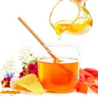
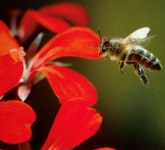
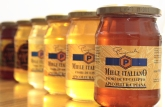
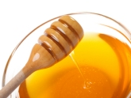
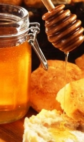

はちみつ
|  |
ナチュラルフード ハチミツは、人間の栄養補給にとって重要なシンプルな糖、フルクトースおよびグルコース、タンパク質、ミネラル、酵素およびビタミンでできた自然でユニークな食品です。 そのような要素は十分に保存されていることが最も重要です。 |
|---|---|
|  |
ミツバチからのベスト ハチミツは様々な花から分泌された蜜柑の形態で、または植物リンパによって産生された「ハネデュー」と呼ばれる甘い液体から集められ、蜂によって変形され、櫛の中に保存されます。 花の季節や種類によって、さまざまな種類の蜂蜜が生産されます。蜜は、主に単一のタイプの花から来るとき、それは花に応じて特定の特性を持つ単一の花の蜂蜜と呼ばれます。 |
|  |
ハニー品質 Apicoltura Pianaは、研究室でさまざまな種類の蜂蜜を分類して選択します。 このような正確な選択により、Apicoltura Pianaは国内外の最高の生産を提供することができます。 |
|  |
官能検査 すべての蜂蜜が選択され分類されます：すべては分析され、販売前に味がつけられます。 |
|  |
なぜ蜂蜜ですか？ 蜂蜜の毎日の摂取量（20〜30g）は、楽しい習慣であり、健康に良い。実際、蜂蜜は起源と複雑さのためのユニークな食べ物です。 砂糖（サッカロース）に比べてカロリーが少なくなっています。 蜂蜜のすべての砂糖は、単糖類のグルコースとフルクトースであり、簡単に摂取し消化します。 蜂蜜は、甘味料としての使用の他に、朝食とスナックとして非常に良いです。 歴史上、ハチミツは様々な治療的性質を持つ医薬品として使用されていました。 |
蜂蜜の種類
慎重に選択して管理しているイタリア、ハンガリー、アルゼンチンの様々な蜂蜜。
- イタリアンアカシア蜂蜜
- イタリアンブラッシュソーニー
- イタリアンシュナウドハニー
- イタリアンユーカリ蜂蜜
- イタリアンルーソーンブローソムハニー
- イタリア・スラ・ハニー
- イタリアンリンデンブロッサムハニー
- イタリアンポリフララハニー
- イタリアンハニードゥーハニー
- アルゼンチンポリフロラハニー
- ハンガリーのアカシア蜂蜜
- ハンガリーポリーフローラハニー
サイズ
250 gガラスジャー
500 gガラスジャー
1000 gガラスジャー
450 g スクイーザーPET
シングルドーズ6 gサッシェ
シングルドーズ20 g PVC BOWL
シングルドーズ30グラスジャー
2.5 kgバケツ
25 kg PAIL